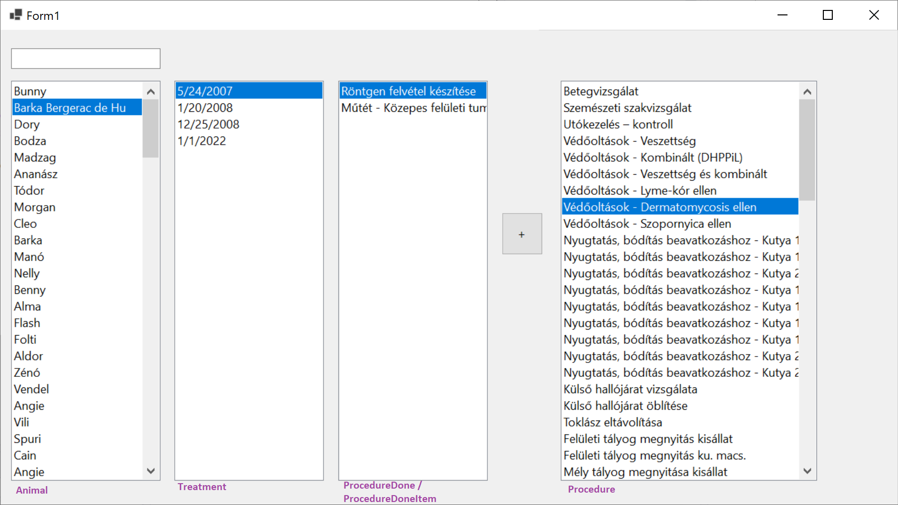

ZH 3a — Állatkórház
Adatbázis
Install-Package Microsoft.EntityFrameworkCore.SqlServer
Install-Package Microsoft.EntityFrameworkCore.Tools
Scaffold-DbContext "Data Source=bit.uni-corvinus.hu;Initial Catalog=se_pets;User ID=hallgato;Password=Password123;Encrypt=False" Microsoft.EntityFrameworkCore.SqlServer -OutputDir Models

Szükséges táblák
Animal → Treatment → ProcedureDone ← Procedure

Lépések
① Hozd létre a projektet, és a fenti adatok alapján készítsd el az adatkötött osztályokat!
② Készítsd el az ábrán látható felhasználói felületet!
③ A bal ListBox-ban jelenítsd meg szűrhető módon az Animal tábla elemeit, a listában az Name mező értéke jelenjen meg!
④ A jobbListBox-ban jelenítsd a Procedure tábla elemeit, a listában a Name mező értéke jelenjen meg! Itt már nincs szükség szűrésre.
⑤ Ha a felhasználó kiválaszt egy Animal-t a bal listából, jelenjenek meg a második listában kezelései Treatment táblából! A megjelenített mező a dátum legyen!
⑥ Hozd létre az alábbi osztályt, mely a harmadik ListBox adatforrásául szolgál:
public class ProcedureDoneItem
{
public int ProcedureDoneSk { get; set; }
public string Name { get; set; }
}
⑦ A harmadik ListBox "fülén" keresztül vedd fel adatkötött adatforrásként az előbb létrehezott ProcedureDoneItem osztályt, majd állítsd be a ListBox adatforrásaként! A ListBox -ban megjelenő mező legyen a Name!
⑧ A második listára kattintva jelenjenek meg a kiválasztott Treatment-hez a hozzá tartozó elvégzett kezelések ProcedureDoneItem formában. Az adatkötés a BindingSource-on keresztül történjen!
⑨ A + gombra kattintva lehessen új Models.ProcedureDone típusú elemet felvenni a context.ProcedureDones gyűjteménybe! Az adatbázisban történő rögzítés után az elemek kerüljenek újraolvasásra a rácsba!
Ⓐ Helyezz el gombot vagy menüt az űrlapon, ami az állatokat tartalmazó tábla tartalmát XML állományba menti. A mentés helyét párbeszédablakból lehessen kiválasztani!
Ⓑ Jelenítsd meg az adatbázisban lévő állatok számát egy címkében!